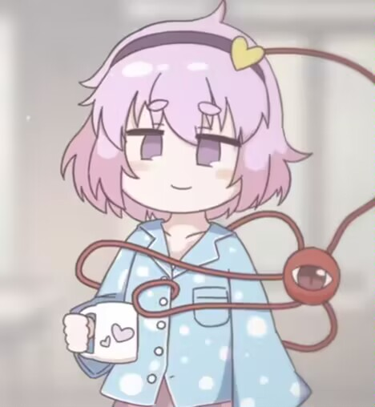

不知道有没有被震撼到？笔者写最后反复的语句还是挺开心的ww~
那么，为了树立正确的价值观，就由笔者来解释为什么正义杀死了人。
其实是一个很简单的小问题，笔者在文中偷换了概念。虽然妖梦喊捉贼确实是为了正义，但是鬼的惩罚却是不正义的。按照现实中来说，就是被盗窃的人发现盗窃，一时怒气上头，杀了放弃抵抗的贼。按照正常来说，应该把贼交给公安机关，让正义执行到底，而不是半路上变成以暴制暴。所以，不是正义杀死了小男孩，恰恰相反，是暴力（邪恶）杀死了他。
不过嘛，毕竟是幻想乡，请勿入脑，请勿当真。请秉持心中的正义和道德底线。
笔者24/2/12于睡前的奇思妙想。
笔者24/2/13于下午付诸于笔。
希望你看得开心ww
（什么时候能改掉写东西啰嗦的坏毛病……）
-----
由于初稿OOC严重，所以笔者不得不进行修改……
笔者24/3/3于下午修改成二稿
